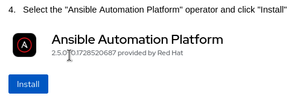
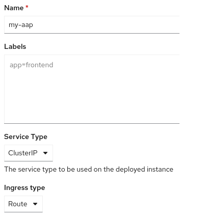

Using Red Hat Service Interconnect to extend the reach of Ansible Automation Platform
See the Solution in Action
1. Before running the solution
In order to reproduce the following solution, you will need the following resources:
-
Access to a running Red Hat OpenShift cluster with Red Hat Ansible Automation Platform operator available through the Operator Hub
-
A subscription or trial license for Red Hat Ansible Automation Platform (running on Red Hat OpenShift cluster)
-
Red Hat Service Interconnect (version 2.x) RPM to be installed at the Red Hat Enterprise Linux machine (for Third-party Network A)
-
A few virtual machines to be used as third-party servers, with SSH server running
-
A machine or a virtual machine with Red Hat Enterprise Linux to simulate third-party network A, with access to the respective servers
-
A Linux machine or virtual machine with Podman version 4+ to simulate third-party network B, with access to the respective servers
-
The following commands are expected:
kubectl,jq,awk,wgetandpodman
2. Walkthrough
2.1. Downloading resources needed
This walkthrough guide uses some files packaged in a tar ball, which must be downloaded and extracted locally. To download and extract the files needed, open a terminal and execute the following commands:
wget https://raw.githubusercontent.com/fgiorgetti/solution-pattern-rhsi-aap/refs/heads/main/documentation/modules/ROOT/assets/resources.tar.gz
tar zxvf resources.tar.gz2.2. Installing Red Hat Ansible Automation Platform
We will just briefly explain how to install Red Hat Ansible Automation Platform on an Red Hat OpenShift cluster. If you need further information, please refer to the official installation guide.
Before you start, notice that you will need a valid Red Hat Ansible Automation Platform (AAP) subscription to proceed, otherwise you won’t be able to complete the AAP installation.
-
Open the Red Hat OpenShift console
-
Inside the console, go to: Operators → OperatorHub
-
Search for "Ansible Automation Platform" as shown below:

-
Select the
Ansible Automation Platformoperator and clickInstall -
Using the default options, with
Installed namespace: aap, clickInstallagain -
Wait for the operator to be installed and ready
-
Click on the installed operator, then find the
Ansible Application Platformresource and clickCreate instance
-
Enter the following Name, Service Type and Ingress type, then click
Create: -
Wait for the
Ansible Automation Platform(AAP) creation to complete (around 10 minutes) -
Once the pods are all running on the
aapnamespace, locate secretmy-aap-admin-password -
Copy the
passwordvalue, which will be used next to log into the AAP console -
Under "Networking → Routes", open the URL for route
my-aap -
Login as admin using the password you copied earlier
-
You will be prompted to enter your subscription information
-
Once you supply your subscription details, you should be logged into the AAP console
2.3. Configuring your Ansible Automation Platform instance
In order to validate this solution pattern, we will need to configure the Ansible Automation Platform (AAP) instance first.
Since the goal is to demonstrate how Red Hat Service Interconnect (RHSI) helps you connect your AAP automation with managed hosts that are not reachable, the AAP configuration used in this solution pattern is minimal.
Here is what we will configure:
-
A project to run against all hosts
-
Two inventories (one for each third-party network)
-
Define the credentials
-
Two job templates (one for each third-party network)
-
A workflow job template (to run all third-party related job templates)
2.3.1. Create a project
The Ansible project that will be used in this solution pattern is a simple fork from the ansible-tower-samples repository
which includes an extra task that simply creates a directory under /tmp named created-by-aap.
This helps validate that AAP has actually connected and performed this respective task against the target host.
In the AAP console, perform the following tasks:
-
Go to
Projectson the left menu (under Automation Execution) -
Click
Create project -
Enter the following data:
-
Name: third-party-networks
-
Organization: Default
-
Execution environment: Default execution environment
-
Source control type: Git
-
Source control URL: https://github.com/fgiorgetti/ansible-tower-samples.git
-
Source control branch/tag/commit: master
-
-
Click: Create project
2.3.2. Create the inventories
Now that the project has been created, we will create two inventories. One for each third-party network.
-
Go to Infrastructure → Inventories on the left menu (under Automation Execution)
-
Click:
Create inventory → Create inventory -
Enter the following data:
-
Name: third-party-network-a
-
Organization: Default
-
Click: Create inventory
-
-
Repeat the same steps to create the inventory named: third-party-network-b
Next we need to add the target hosts for each inventory.
-
Open the
third-party-network-ainventory and click theHoststab -
Click the
Create hostbutton -
Enter the following data:
-
Name: server-a1
-
Set variables to (using YAML format):
ansible_host: server-a1.net-a
-
-
Repeat the previous steps to create: server-a2 and server-a3
Then we need to add the hosts for the second third-party network.
-
Open the third-party-network-b inventory and click the Hosts tab
-
Click the Create host button
-
Enter the following data:
-
Name: server-b1
-
Set variables to (using YAML format):
ansible_host: server-b1.net-b
-
-
Repeat the previous steps to create: server-b2 and server-b3
As you may have noticed, our inventories rely that the servers will be reachable through the following hostnames:
-
server-a1.net-a
-
server-a2.net-a
-
server-a3.net-a
-
server-b1.net-b
-
server-b2.net-b
-
server-b3.net-b
At this point, these hosts cannot be resolved by AAP, but once we finish the setup of our solution, AAP should be able to resolve and connect with these hosts.
2.3.3. Create the credentials
The inventories that will be used by Ansible have been defined, but we did not specify the credentials that Ansible
will use to connect with those servers through SSH.
To keep it simple we will create two Machine (type) credentials. One for each third-party network.
-
Go to
Infrastructure → Credentials(under Automation Execution) -
Click
Create credential -
Enter the following data:
-
Name: third-party-network-a
-
Organization: Default
-
Credential type: Machine
-
Username: cloud-user
-
Password: cloud-password-a
-
Click the
Create credentialbutton
-
Repeat the same steps to create a credential named third-party-network-b.
|
Make sure you are using the correct credentials for your servers. |
2.3.4. Create the job templates
We need to create two job templates.
They will basically tie the Ansible project to be executed with the inventory that defines the target hosts and associate the credential to be used for each third-party network.
-
Go to
Templates(under Automation Execution) on the left menu -
Click the
Create templatebutton, then clickCreate job template -
Enter the following data:
-
Name: third-party-network-a
-
Inventory: third-party-network-a
-
Project: third-party-networks
-
Playbook (should be automatically set): hello_world.yml
-
Credentials: third-party-network-a
-
Click the
Create job templatebutton
-
Repeat the steps above for third-party-network-b.
After both Job Templates have been created, we need to create a Workflow job template.
It will be used to trigger both job templates at once.
-
Go to
Templates(under Automation Execution) on the left menu -
Click the
Create templatebutton, then clickCreate workflow job template -
Enter the following data:
-
Name: third-party-networks
-
Organization: Default
-
Click the
Create workflow job templatebutton -
Click the
Add stepbutton -
Node type: Job Template
-
Job Template: third-party-network-a
-
Click the
Nextbutton -
Click the
Finishbutton -
Click the
Add stepbutton -
Node type: Job Template
-
Job Template: third-party-network-b
-
Click the
Nextbutton -
Click the
Finishbutton -
Click the
Savebutton
-
You should end up with something like shown in the workflow below:
At this point, all the AAP configuration needed is done.
Now we need to install and configure Red Hat Service Interconnect to link the third-party networks with the Red Hat OpenShift cluster.
2.4. Installing Red Hat Service Interconnect on Red Hat OpenShift
|
THE FOLLOWING INSTRUCTIONS USE THE UPSTREAM VERSION OF RHSI (SKUPPER V2) |
We need to install Red Hat Service Interconnect in two separate namespaces.
The reason for this is to ensure that each third-party network is connected to an isolated Virtual Application Network (VAN).
Along with that we will also create Network Policies to ensure that each namespace is only accessible to AAP, so that the third-party servers exposed into the Red Hat OpenShift cluster can only be reached internally by AAP.
2.4.1. Installing the Red Hat Service Interconnect controller
The RHSI controller is deployed to its own namespace and it has the ability to watch for RHSI resources across all namespaces
in the Red Hat OpenShift cluster.
Let’s install the RHSI controller:
-
Open a terminal
-
Set the KUBECONFIG environment variable
-
You must be logged in as a cluster administrator
-
-
Create the
skuppernamespace, using:kubectl create namespace skupper -
The RHSI V2 controller can be installed using:
kubectl -n skupper apply -f https://skupper.io/v2/install.yaml -
Now wait for the skupper-controller pod to be running on the skupper namespace:
kubectl -n skupper wait --for=condition=Ready pod -l application=skupper-controller
2.4.2. Create namespaces for each third-party network
Once the RHSI controller is running, we need to apply the RHSI Custom Resources (CRs) for the RHSI controller to create the:
-
Sites
-
Listeners
-
AccessTokens
The first thing we need to do is create the namespaces for third-party networks A and B.
The namespaces will be named: net-a and net-b respectively.
These namespaces have already been used to compose the expected fully qualified hostnames
used in the AAP inventories, example given: server-a1.net-a.
Let’s have a look at the custom resources we need to define these two RHSI sites.
The resources can be found at ./cloud/net-a and ./cloud/net-b folders.
-
Site-
A Site represents a separate RHSI instance
-
You can only have a single RHSI site per namespace
-
It is the main resource to be created
-
-
AccessGrant-
Grants the permission for other sites to redeem AccessTokens to this site
-
AccessTokens can be generated once the AccessGrant is ready
-
-
Listener-
Represents an ingress to target workloads exposed in your Virtual Application Network (VAN)
-
On OpenShift / Kubernetes they are realized as a Service
-
Listeners must have a corresponding Connector available in some other Site linked to the VAN
-
Both sites set the linkAccess value to default. This will ensure that the default ingress method for the target
cluster will be used.
On Red Hat OpenShift clusters, a Route should be created, otherwise a LoadBalancer service will be created.
This ingress method is used to accept incoming links coming from other Sites.
The AccessGrant allows a single AccessToken to be redeemed and it must be redeemed within 30 minutes
from AccessGrant creation, otherwise it won’t be valid.
Each site has a Listener for each target server expected by AAP.
The spec.host field determines the Service name that will be created on the respective namespace,
therefore the fully qualified service name will be composed by the spec.host field plus the namespace
name, matching the hostnames added to the inventories in AAP.
The spec.routingKey is used to determine the matching Connector.
So the RHSI sites created inside the third-party networks, must define the respective spec.routingKey.
Along with the RHSI resources, there are two Network policies defined to add an extra security layer (one for each namespace),
preventing undesired internal access to your third-party network namespaces.
These NetworkPolicies allow ingress to the skupper-router pod only coming from pods running on the aap or the
self namespace (net-a or net-b).
To create the namespaces, the RHSI sites and the network policies, run:
kubectl apply -f ./cloud/net-a/
kubectl apply -f ./cloud/net-b/You can verify that your sites have been created running:
kubectl -n net-a get pod,site
kubectl -n net-b get pod,siteAnd you should see an output similar to this one:
NAME READY STATUS RESTARTS AGE pod/skupper-router-78b5b8ddb5-h76sm 2/2 Running 0 53m NAME STATUS SITES IN NETWORK site.skupper.io/net-a OK NAME READY STATUS RESTARTS AGE pod/skupper-router-5f54dd4f88-24rzh 2/2 Running 0 54m NAME STATUS SITES IN NETWORK site.skupper.io/net-b OK
2.4.3. Preparing site bundles for third-party networks
A site bundle is a compressed file that contains a whole RHSI site definition to run outside of Kubernetes or OpenShift.
They can be installed to run as a container, using Podman or Docker and also as an regular process on a Red Hat Enterprise Linux server,
which will require a local installation of the skupper-router RPM package.
The site bundle is an easy approach to install a prepared site definition on a remote location, but you could also create a non-Kubernetes site using the Skupper V2 CLI or a bootstrap container.
Here are the Custom Resources (CRs) needed to define the site bundles.
* Site
* Connector
* AccessToken (will be generated from AccessGrants created earlier)
In order to prepare a site bundle to be installed at the Third Party Networks, we will use the CRs located under
./internal/net-a and ./internal/net-b.
Along with these CRs, we also need to generate AccessTokens, so that the bundles have the ability to establish
an RHSI link against the RHSI site running on the Red Hat OpenShift cluster on namespaces net-a and net-b respectively.
To generate the AccessTokens we will need to extract some information from the AccessGrant created on both
net-a and net-b namespaces.
To do it, execute the ./scripts/generate-access-token.sh script, using:
./scripts/generate-access-token.sh net-a > ./internal/net-a/20-token.yaml
./scripts/generate-access-token.sh net-b > ./internal/net-b/20-token.yamlNow that all the CRs are in place, we must generate the site bundles, using:
curl -s https://raw.githubusercontent.com/skupperproject/skupper/refs/heads/v2/cmd/bootstrap/bootstrap.sh | sh -s -- -p ./internal/net-a -b bundle
curl -s https://raw.githubusercontent.com/skupperproject/skupper/refs/heads/v2/cmd/bootstrap/bootstrap.sh | sh -s -- -p ./internal/net-b -b bundleThe bundles will be generated and their location can be found through a message that says: "Installation bundle available at". Example given:
Installation bundle available at: /home/my-user/.local/share/skupper/bundles/skupper-install-net-a.sh
2.5. Connecting the Third-party Networks
The last piece is to install the generated site-bundles on the respective servers for each target third-party network.
To install, you should just send the site bundle file: skupper-install-net-a.sh or skupper-install-net-b.sh to
the target server where the RHSI site will be installed, then execute it, for example:
scp skupper-install-net-a.sh my-user@my-server-third-party-net-a:
./skupper-install-net-a.sh -n net-ascp skupper-install-net-b.sh my-user@my-server-third-party-net-b:
./skupper-install-net-b.sh -n net-b|
The commands above have been executed against an internal hostname that
represents the server where the RHSI site bundle will be installed and these
servers can reach the target hosts that will be managed by AAP. |
|
If you want your Third Party Network A site to run using a regular process and not a container, you must first
install the |
Once both bundles have been installed, the three servers behind each third party network should be exposed and accessible by AAP inside the Red Hat OpenShift cluster.
2.6. Validating the scenario
Now the whole scenario has been deployed and the Workflow job template that was created on AAP should be able to run and reach all servers.
Back to the AAP console, go to:
-
Templates(under Automation Execution) -
Click the
third-party-networksworkflow job template -
Click the
Launch templatebutton -
Watch the workflow
-
You should see a successful result